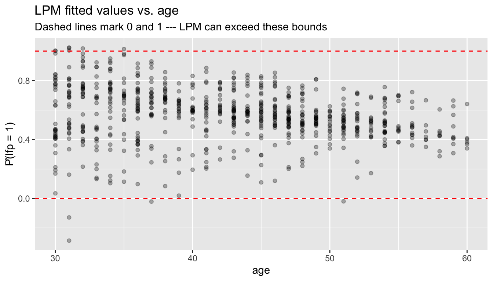
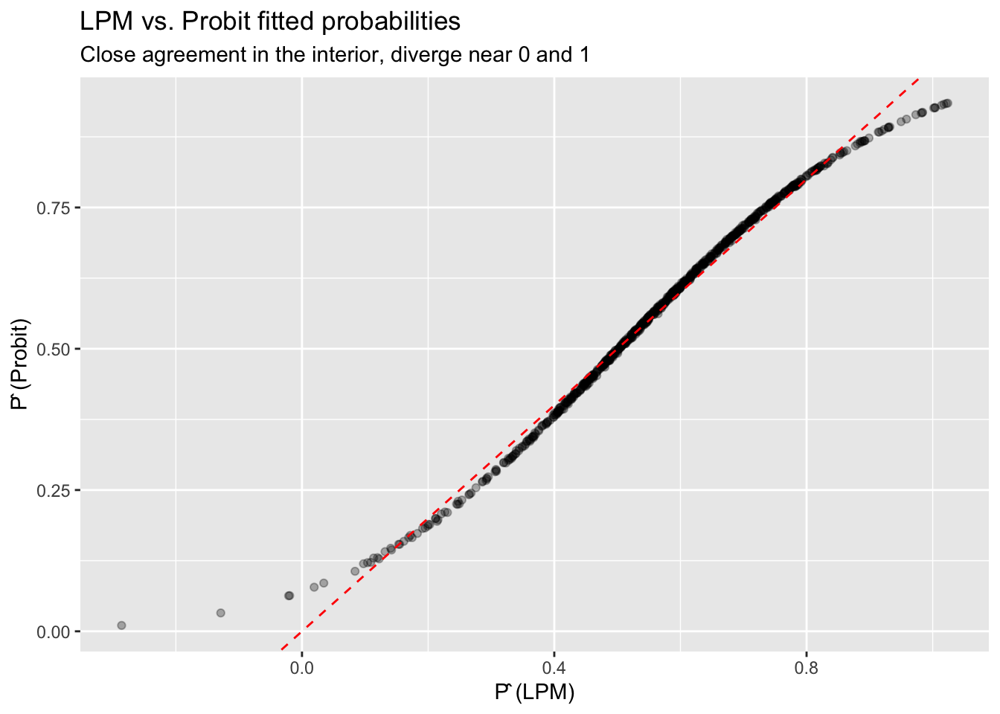
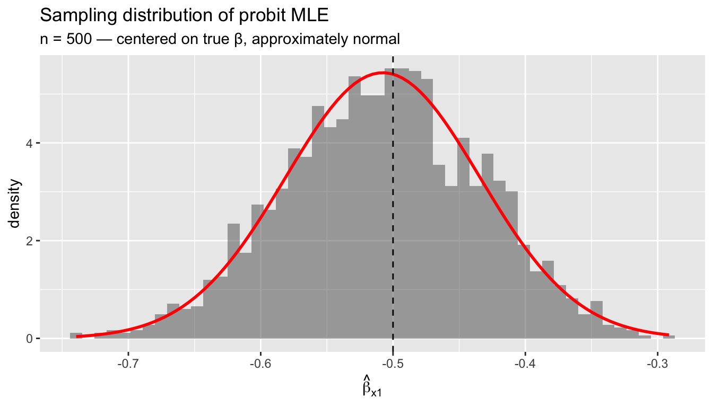

library(ggplot2)
library(sandwich)
library(lmtest)
library(estimatr)
library(carData)
options(digits = 4)7. Probit and MLE
Binary outcomes and maximum likelihood estimation
Chapter 6 developed the likelihood for the normal linear model, where MLE turned out to be OLS. This chapter applies the same MLE toolkit to a genuinely nonlinear problem: modeling binary outcomes. We start with the linear probability model (LPM), motivate the probit link, write the probit likelihood and score by hand, implement Newton–Raphson, and compare everything to R’s built-in glm(). The running theme is that the score equation \(\sum s_i(\beta) = 0\) is just another moment condition — the same logic that gave us OLS, but now for a nonlinear model.
Questions this chapter answers:
- Why does the linear probability model predict outside \([0, 1]\), and how does probit fix this?
- What is the probit model, and how does it arise from a latent variable representation?
- How do we interpret probit coefficients — and why are marginal effects needed?
- How does Newton-Raphson find the MLE, and why does it converge so fast?
We use the Mroz (1987) dataset: 753 married women, with labor force participation (lfp) as the binary outcome.
data(Mroz)
Mroz$lfp_bin <- as.integer(Mroz$lfp == "yes")
mean(Mroz$lfp_bin)[1] 0.5684About 57% of women in the sample participate in the labor force.
1 The linear probability model
When \(Y \in \{0,1\}\), the conditional expectation is a probability:
\[E[Y \mid X] = P(Y = 1 \mid X)\]
The best linear predictor (Chapter 2) still exists — OLS estimates it by solving the usual normal equations. This is the linear probability model (LPM):
lpm <- lm_robust(lfp_bin ~ k5 + k618 + age + wc + inc, data = Mroz, se_type = "HC2")
summary(lpm)
Call:
lm_robust(formula = lfp_bin ~ k5 + k618 + age + wc + inc, data = Mroz,
se_type = "HC2")
Standard error type: HC2
Coefficients:
Estimate Std. Error t value Pr(>|t|) CI Lower CI Upper DF
(Intercept) 1.28867 0.11527 11.18 6.12e-27 1.06239 1.51495 747
k5 -0.30255 0.03297 -9.18 4.28e-19 -0.36728 -0.23783 747
k618 -0.01670 0.01462 -1.14 2.54e-01 -0.04540 0.01200 747
age -0.01320 0.00243 -5.43 7.77e-08 -0.01798 -0.00843 747
wcyes 0.22065 0.03707 5.95 4.05e-09 0.14788 0.29341 747
inc -0.00627 0.00153 -4.10 4.50e-05 -0.00927 -0.00327 747
Multiple R-squared: 0.131 , Adjusted R-squared: 0.125
F-statistic: 28.8 on 5 and 747 DF, p-value: <2e-16Binary outcomes have built-in heteroskedasticity: \(\text{Var}(Y \mid X) = p(X)(1 - p(X))\) depends on \(X\) by construction, so we use HC2 standard errors throughout.
1.1 Predictions outside \([0,1]\)
The LPM is a linear function — nothing stops it from predicting probabilities below 0 or above 1:
lpm_ols <- lm(lfp_bin ~ k5 + k618 + age + wc + inc, data = Mroz)
p_hat_lpm <- fitted(lpm_ols)
c(min = min(p_hat_lpm), max = max(p_hat_lpm),
outside_01 = sum(p_hat_lpm < 0 | p_hat_lpm > 1)) min max outside_01
-0.286 1.024 11.000 df_lpm <- data.frame(fitted = p_hat_lpm, age = Mroz$age, y = Mroz$lfp_bin)
ggplot(df_lpm, aes(age, fitted)) +
geom_point(alpha = 0.3) +
geom_hline(yintercept = c(0, 1), linetype = "dashed", color = "red") +
labs(title = "LPM fitted values vs. age",
subtitle = "Dashed lines mark 0 and 1 --- LPM can exceed these bounds",
y = "P̂(lfp = 1)")
This motivates models that constrain predictions to \([0, 1]\).
WarningLPM Predictions Outside [0, 1]
The linear probability model can predict probabilities below 0 or above 1 because it fits a line through binary data. While this doesn’t affect the interpretation of coefficients as average marginal effects, it limits the model’s use for prediction.
2 The probit model
2.1 Latent variable representation
Suppose there is an unobserved continuous variable:
\[Y_i^* = X_i'\beta + \varepsilon_i, \qquad \varepsilon_i \sim N(0, 1)\]
We observe \(Y_i = \mathbf{1}\{Y_i^* > 0\}\). Then:
\[P(Y_i = 1 \mid X_i) = P(\varepsilon_i > -X_i'\beta) = \Phi(X_i'\beta)\]
where \(\Phi\) is the standard normal CDF. This is the probit model — a single-index model with link function \(G = \Phi\).
Definition 1 (Probit Model) The probit model specifies \(P(Y_i = 1 | X_i) = \Phi(X_i'\beta)\), where \(\Phi\) is the standard normal CDF. It arises from a latent variable \(Y_i^* = X_i'\beta + \varepsilon_i\) with \(\varepsilon_i \sim N(0,1)\) and \(Y_i = \mathbf{1}\{Y_i^* > 0\}\).
2.2 Fitting probit with glm()
probit <- glm(lfp_bin ~ k5 + k618 + age + wc + inc,
data = Mroz, family = binomial(link = "probit"))
summary(probit)
Call:
glm(formula = lfp_bin ~ k5 + k618 + age + wc + inc, family = binomial(link = "probit"),
data = Mroz)
Coefficients:
Estimate Std. Error z value Pr(>|z|)
(Intercept) 2.28263 0.36748 6.21 5.2e-10 ***
k5 -0.87865 0.11331 -7.75 8.9e-15 ***
k618 -0.05185 0.04055 -1.28 0.2
age -0.03814 0.00749 -5.09 3.5e-07 ***
wcyes 0.63741 0.11742 5.43 5.7e-08 ***
inc -0.01850 0.00457 -4.05 5.1e-05 ***
---
Signif. codes: 0 '***' 0.001 '**' 0.01 '*' 0.05 '.' 0.1 ' ' 1
(Dispersion parameter for binomial family taken to be 1)
Null deviance: 1029.75 on 752 degrees of freedom
Residual deviance: 923.04 on 747 degrees of freedom
AIC: 935
Number of Fisher Scoring iterations: 4glm() uses Fisher scoring (iteratively reweighted least squares), which is a variant of Newton–Raphson. Below, we implement this from scratch.
2.3 Identification and scale
An important difference from OLS: probit coefficients are identified only up to scale. If we allowed \(\text{Var}(\varepsilon) = \sigma^2\) instead of normalizing to 1, then \(P(Y = 1 \mid X) = \Phi(X'\beta/\sigma)\) — only \(\beta/\sigma\) is identified. The normalization \(\sigma = 1\) pins down the scale, but it means \(\beta_j\) does not have the same interpretation as in OLS. We return to this in the marginal effects section.
3 Writing the probit likelihood by hand
The probit log-likelihood is:
\[\ell_n(\beta) = \sum_{i=1}^n \left[ Y_i \log \Phi(X_i'\beta) + (1 - Y_i) \log(1 - \Phi(X_i'\beta)) \right] \tag{1}\]
y <- Mroz$lfp_bin
X <- model.matrix(~ k5 + k618 + age + wc + inc, data = Mroz)
n <- nrow(X)
K <- ncol(X)
# Log-likelihood
probit_loglik <- function(beta) {
Xb <- as.numeric(X %*% beta)
Phi <- pnorm(Xb)
# Clamp to avoid log(0)
Phi <- pmax(pmin(Phi, 1 - 1e-10), 1e-10)
sum(y * log(Phi) + (1 - y) * log(1 - Phi))
}
# Evaluate at glm's estimate
probit_loglik(coef(probit))[1] -461.5logLik(probit)'log Lik.' -461.5 (df=6)3.1 Profile likelihood
We can visualize the likelihood as a function of a single coefficient, holding the others at their MLE values:
beta_hat <- coef(probit)
j <- 2 # k5 coefficient
b_grid <- seq(beta_hat[j] - 1, beta_hat[j] + 1, length.out = 200)
ll_profile <- numeric(length(b_grid))
for (i in seq_along(b_grid)) {
beta_try <- beta_hat
beta_try[j] <- b_grid[i]
ll_profile[i] <- probit_loglik(beta_try)
}
df_profile <- data.frame(beta_k5 = b_grid, loglik = ll_profile)
ggplot(df_profile, aes(beta_k5, loglik)) +
geom_line(linewidth = 1) +
geom_vline(xintercept = beta_hat[j], linetype = "dashed", color = "red") +
labs(title = "Profile log-likelihood for β_k5",
subtitle = paste("MLE =", round(beta_hat[j], 3)),
x = expression(beta[k5]), y = "Log-likelihood")
4 The score function
Recall the score and Fisher information from Chapter 6. The individual score contribution for the probit model is:
\[s_i(\beta) = \frac{\phi(X_i'\beta)}{\Phi(X_i'\beta)(1 - \Phi(X_i'\beta))} (Y_i - \Phi(X_i'\beta)) X_i \tag{2}\]
where \(\phi\) is the standard normal pdf. The weight \(w_i = \phi/({\Phi(1 - \Phi)})\) upweights observations near \(X'\beta = 0\) (where the likelihood is most informative) and downweights observations deep in the tails.
# Score function (returns a K-vector)
probit_score <- function(beta) {
Xb <- as.numeric(X %*% beta)
Phi <- pnorm(Xb)
phi <- dnorm(Xb)
Phi <- pmax(pmin(Phi, 1 - 1e-10), 1e-10)
w <- phi / (Phi * (1 - Phi))
resid_w <- w * (y - Phi)
as.numeric(t(X) %*% resid_w)
}
# At the MLE, the score should be zero
probit_score(coef(probit))[1] 1.798e-04 7.338e-05 6.640e-04 6.994e-03 1.101e-04 7.178e-03All elements are numerically zero — confirming that glm() found the score root.
4.1 Comparing estimating equations
Setting the score to zero defines the MLE. Compare this to the OLS normal equation:
| Model | Estimating equation | Weights |
|---|---|---|
| OLS | \(\sum_i X_i(Y_i - X_i'\beta) = 0\) | Equal |
| Probit MLE | \(\sum_i w_i(Y_i - \Phi(X_i'\beta)) X_i = 0\) | \(w_i = \phi/(\Phi(1-\Phi))\) |
| General | \(\sum_i g_i(\theta) = 0\) | \(\to\) GMM |
Both OLS and probit MLE are method-of-moments estimators — they set sample moment conditions to zero. GMM (Chapter 13) is the general framework.
TipThe Probit Score Is a Moment Condition
Setting the probit score to zero, \(\sum w_i(Y_i - \Phi(X_i'\beta))X_i = 0\), is a method-of-moments estimating equation — just like OLS normal equations but with observation-specific weights \(w_i\). This connection to GMM (Chapter 11) unifies all the estimators in this course.
5 Newton–Raphson from scratch
The Hessian (second derivative of the log-likelihood) is:
# Hessian function (returns a K x K matrix)
probit_hessian <- function(beta) {
Xb <- as.numeric(X %*% beta)
Phi <- pnorm(Xb)
phi <- dnorm(Xb)
Phi <- pmax(pmin(Phi, 1 - 1e-10), 1e-10)
# Weight for the Hessian
lambda <- phi / (Phi * (1 - Phi))
d <- lambda * (lambda + Xb) # diagonal weights
# Negative Hessian contribution from each obs
w_hess <- -(phi^2) / (Phi * (1 - Phi))^2 *
((y - Phi) * (-Xb * Phi * (1 - Phi) - phi * (1 - 2 * Phi)) -
phi^2) / (1)
# Simpler: use the expected Hessian (Fisher scoring)
w_fisher <- phi^2 / (Phi * (1 - Phi))
-t(X) %*% diag(w_fisher) %*% X
}Newton–Raphson iterates: \(\beta^{(t+1)} = \beta^{(t)} - [H_n(\beta^{(t)})]^{-1} S_n(\beta^{(t)})\).
# Newton-Raphson (using Fisher scoring: expected Hessian)
newton_raphson_probit <- function(X, y, tol = 1e-8, max_iter = 50) {
n <- nrow(X)
K <- ncol(X)
# Initialize with OLS
beta <- solve(crossprod(X)) %*% crossprod(X, y)
beta <- as.numeric(beta)
for (iter in 1:max_iter) {
Xb <- as.numeric(X %*% beta)
Phi <- pnorm(Xb)
phi <- dnorm(Xb)
Phi <- pmax(pmin(Phi, 1 - 1e-10), 1e-10)
# Score
w <- phi / (Phi * (1 - Phi))
S <- as.numeric(t(X) %*% (w * (y - Phi)))
# Expected Hessian (Fisher scoring)
W <- phi^2 / (Phi * (1 - Phi))
H <- -t(X) %*% diag(W) %*% X
# Update
delta <- -solve(H) %*% S
beta <- beta + as.numeric(delta)
if (max(abs(delta)) < tol) {
return(list(coefficients = beta, iterations = iter,
converged = TRUE, hessian = H))
}
}
list(coefficients = beta, iterations = max_iter, converged = FALSE, hessian = H)
}
fit_nr <- newton_raphson_probit(X, y)
fit_nr$iterations[1] 7# Compare our Newton-Raphson to glm()
data.frame(
Variable = colnames(X),
NR = round(fit_nr$coefficients, 6),
glm = round(coef(probit), 6),
diff = round(fit_nr$coefficients - coef(probit), 10)
) Variable NR glm diff
(Intercept) (Intercept) 2.28263 2.28263 -2.450e-06
k5 k5 -0.87865 -0.87865 3.073e-07
k618 k618 -0.05185 -0.05185 5.738e-07
age age -0.03814 -0.03814 1.780e-08
wcyes wcyes 0.63741 0.63741 3.525e-07
inc inc -0.01850 -0.01850 5.800e-08Our implementation matches glm() to many decimal places, converging in just a handful of iterations.
5.1 Visualizing convergence
# Track convergence
beta_path <- matrix(NA, 20, K)
beta <- as.numeric(solve(crossprod(X)) %*% crossprod(X, y))
beta_path[1, ] <- beta
for (iter in 2:20) {
Xb <- as.numeric(X %*% beta)
Phi <- pnorm(Xb)
phi <- dnorm(Xb)
Phi <- pmax(pmin(Phi, 1 - 1e-10), 1e-10)
w <- phi / (Phi * (1 - Phi))
S <- as.numeric(t(X) %*% (w * (y - Phi)))
W <- phi^2 / (Phi * (1 - Phi))
H <- -t(X) %*% diag(W) %*% X
delta <- -solve(H) %*% S
beta <- beta + as.numeric(delta)
beta_path[iter, ] <- beta
if (max(abs(delta)) < 1e-10) break
}
# Distance from MLE at each iteration
dist_to_mle <- apply(beta_path, 1, function(b) {
if (any(is.na(b))) return(NA)
sqrt(sum((b - coef(probit))^2))
})
dist_to_mle <- dist_to_mle[!is.na(dist_to_mle)]
df_conv <- data.frame(iteration = seq_along(dist_to_mle), distance = dist_to_mle)
ggplot(df_conv, aes(iteration, distance)) +
geom_line(linewidth = 1) +
geom_point(size = 2) +
scale_y_log10() +
labs(title = "Newton-Raphson convergence",
subtitle = "Distance to MLE on log scale --- quadratic convergence",
y = "||β(t) - β̂|| (log scale)")
Newton–Raphson converges quadratically: the number of correct digits roughly doubles each iteration.
NoteNewton-Raphson Exploits Concavity
The probit log-likelihood is globally concave, guaranteeing that Newton-Raphson (or Fisher scoring) converges to the unique maximum from any starting point. Quadratic convergence means the number of correct digits roughly doubles each iteration.
6 Marginal effects
In OLS, \(\partial E[Y \mid X] / \partial x_j = \beta_j\) — the coefficient is the marginal effect. In probit:
\[\frac{\partial P(Y = 1 \mid X)}{\partial x_j} = \phi(X'\beta) \cdot \beta_j\]
The marginal effect depends on \(X\) through \(\phi(X'\beta)\). Two standard summaries:
Definition 2 (Marginal Effects) In the probit model, \(\partial P(Y=1|X)/\partial x_j = \phi(X'\beta) \cdot \beta_j\). The marginal effect at the mean (MEM) evaluates at \(\bar{X}\); the average marginal effect (AME) averages over all observations. AME is comparable to the LPM coefficient.
- Marginal effect at the mean (MEM): evaluate at \(\bar{X}\)
- Average marginal effect (AME): average the marginal effect over all observations
Xb_hat <- as.numeric(X %*% coef(probit))
# Marginal effect at the mean
phi_at_mean <- dnorm(mean(Xb_hat))
mem <- phi_at_mean * coef(probit)
# Average marginal effect
phi_each <- dnorm(Xb_hat)
ame <- colMeans(outer(phi_each, coef(probit)))
# Compare to LPM coefficients
data.frame(
Variable = names(coef(probit)),
LPM = round(coef(lpm_ols), 4),
Probit = round(coef(probit), 4),
MEM = round(mem, 4),
AME = round(ame, 4)
) Variable LPM Probit MEM AME
(Intercept) (Intercept) 1.2887 2.2826 0.8946 0.7986
k5 k5 -0.3026 -0.8787 -0.3444 -0.3074
k618 k618 -0.0167 -0.0519 -0.0203 -0.0181
age age -0.0132 -0.0381 -0.0149 -0.0133
wcyes wcyes 0.2206 0.6374 0.2498 0.2230
inc inc -0.0063 -0.0185 -0.0073 -0.0065The AME is directly comparable to the LPM coefficient: both estimate the average change in \(P(Y=1)\) per unit change in \(X_j\). They are generally similar, with differences reflecting the curvature of \(\Phi\).
6.1 Where marginal effects differ most
# Marginal effect of age as a function of the index
xb_grid <- seq(-3, 3, length.out = 200)
me_age <- dnorm(xb_grid) * coef(probit)["age"]
df_me <- data.frame(index = xb_grid, me = me_age)
ggplot(df_me, aes(index, me)) +
geom_line(linewidth = 1) +
geom_hline(yintercept = coef(lpm_ols)["age"], linetype = "dashed", color = "red") +
labs(title = "Marginal effect of age on P(lfp = 1)",
subtitle = "Probit ME (black) vs. LPM constant effect (red dashed)",
x = "X'β (probit index)", y = "∂P/∂age")
The probit marginal effect is largest near \(X'\beta = 0\) (where the CDF is steepest) and vanishes in the tails. The LPM assumes a constant effect everywhere.
7 Fisher information and standard errors
7.1 Model-based standard errors
Under correct specification, the information matrix equality holds:
\[\mathcal{I}(\beta) = E[s_i s_i'] = -E\left[\frac{\partial^2 \ell_i}{\partial \beta \partial \beta'}\right]\]
The asymptotic variance of \(\hat{\beta}\) is \(\mathcal{I}(\beta)^{-1}/n\), estimated by inverting the negative Hessian:
# Model-based variance: inverse of negative Hessian
V_model <- solve(-fit_nr$hessian)
se_model <- sqrt(diag(V_model))
# Compare to glm's reported SEs
data.frame(
Variable = colnames(X),
SE_manual = round(se_model, 5),
SE_glm = round(summary(probit)$coefficients[, "Std. Error"], 5)
) Variable SE_manual SE_glm
(Intercept) (Intercept) 0.36748 0.36748
k5 k5 0.11331 0.11331
k618 k618 0.04055 0.04055
age age 0.00749 0.00749
wcyes wcyes 0.11742 0.11742
inc inc 0.00457 0.004577.2 Sandwich standard errors
If the probit model is misspecified (wrong link function), the information matrix equality fails and we need the sandwich:
\[V_{\text{sandwich}} = H^{-1} \left(\sum_i s_i s_i'\right) H^{-1}\]
# Robust SEs
coeftest(probit) # model-based
z test of coefficients:
Estimate Std. Error z value Pr(>|z|)
(Intercept) 2.28263 0.36748 6.21 5.2e-10 ***
k5 -0.87865 0.11331 -7.75 8.9e-15 ***
k618 -0.05185 0.04055 -1.28 0.2
age -0.03814 0.00749 -5.09 3.5e-07 ***
wcyes 0.63741 0.11742 5.43 5.7e-08 ***
inc -0.01850 0.00457 -4.05 5.1e-05 ***
---
Signif. codes: 0 '***' 0.001 '**' 0.01 '*' 0.05 '.' 0.1 ' ' 1coeftest(probit, vcov = vcovHC(probit, type = "HC1")) # sandwich
z test of coefficients:
Estimate Std. Error z value Pr(>|z|)
(Intercept) 2.28263 0.37312 6.12 9.5e-10 ***
k5 -0.87865 0.11725 -7.49 6.7e-14 ***
k618 -0.05185 0.04359 -1.19 0.23425
age -0.03814 0.00755 -5.05 4.4e-07 ***
wcyes 0.63741 0.11764 5.42 6.0e-08 ***
inc -0.01850 0.00493 -3.75 0.00018 ***
---
Signif. codes: 0 '***' 0.001 '**' 0.01 '*' 0.05 '.' 0.1 ' ' 1se_classical <- summary(probit)$coefficients[, "Std. Error"]
se_robust <- sqrt(diag(vcovHC(probit, type = "HC1")))
data.frame(
Variable = names(coef(probit)),
Model_based = round(se_classical, 4),
Sandwich = round(se_robust, 4),
Ratio = round(se_robust / se_classical, 3)
) Variable Model_based Sandwich Ratio
(Intercept) (Intercept) 0.3675 0.3731 1.015
k5 k5 0.1133 0.1172 1.035
k618 k618 0.0406 0.0436 1.075
age age 0.0075 0.0076 1.009
wcyes wcyes 0.1174 0.1176 1.002
inc inc 0.0046 0.0049 1.079If model-based and sandwich SEs differ substantially, this signals possible misspecification of the link function. Here they are similar, which is reassuring.
8 LPM vs. probit: applied comparison
8.1 Fitted probabilities
p_probit <- predict(probit, type = "response")
df_compare <- data.frame(
lpm = p_hat_lpm,
probit = p_probit,
y = Mroz$lfp_bin
)
ggplot(df_compare, aes(lpm, probit)) +
geom_point(alpha = 0.3) +
geom_abline(slope = 1, intercept = 0, linetype = "dashed", color = "red") +
labs(title = "LPM vs. Probit fitted probabilities",
subtitle = "Close agreement in the interior, diverge near 0 and 1",
x = "P̂ (LPM)", y = "P̂ (Probit)")
# Summary comparison
data.frame(
Model = c("LPM", "Probit"),
LogLik = c(sum(dbinom(y, 1, pmax(pmin(p_hat_lpm, 1-1e-10), 1e-10), log = TRUE)),
as.numeric(logLik(probit))),
AIC = c(NA, AIC(probit)),
Predictions_outside_01 = c(sum(p_hat_lpm < 0 | p_hat_lpm > 1), 0)
) Model LogLik AIC Predictions_outside_01
1 LPM -462.6 NA 11
2 Probit -461.5 935 08.2 When does the choice matter?
The LPM and probit give nearly identical results when predicted probabilities are far from 0 and 1. They diverge most when:
- The outcome is rare (or nearly universal)
- Predictions reach the boundaries
- You need to interpret the functional form (e.g., for counterfactual predictions)
For estimating average marginal effects, the LPM is a robust baseline that doesn’t require correct specification of the link function.
9 Logit: the main alternative
The logit model uses the logistic CDF \(\Lambda(z) = e^z/(1 + e^z)\) instead of \(\Phi\):
logit <- glm(lfp_bin ~ k5 + k618 + age + wc + inc,
data = Mroz, family = binomial(link = "logit"))
# Probit and logit fitted values are nearly identical
max(abs(predict(probit, type = "response") - predict(logit, type = "response")))[1] 0.01162# Coefficients differ by approximately a factor of 1.6
data.frame(
Variable = names(coef(probit)),
Probit = round(coef(probit), 4),
Logit = round(coef(logit), 4),
Ratio = round(coef(logit) / coef(probit), 3)
) Variable Probit Logit Ratio
(Intercept) (Intercept) 2.2826 3.7999 1.665
k5 k5 -0.8787 -1.4631 1.665
k618 k618 -0.0519 -0.0876 1.689
age age -0.0381 -0.0637 1.669
wcyes wcyes 0.6374 1.0623 1.667
inc inc -0.0185 -0.0308 1.663The ratio of logit to probit coefficients is approximately \(\pi/\sqrt{3} \approx 1.81\), because the logistic distribution has variance \(\pi^2/3\) while the standard normal has variance 1. The fitted probabilities are nearly indistinguishable.
10 Simulation: verifying asymptotic normality
The MLE theory from Chapter 6 says \(\sqrt{n}(\hat{\beta} - \beta_0) \to N(0, \mathcal{I}^{-1})\). Let’s verify with a controlled simulation:
set.seed(42)
B <- 2000
n_sim <- 500
beta_true <- c(0.3, -0.5, 0.8) # intercept, x1, x2
K_sim <- length(beta_true)
b_sim <- matrix(NA, B, K_sim)
for (b in 1:B) {
x1 <- rnorm(n_sim)
x2 <- rnorm(n_sim)
X_sim <- cbind(1, x1, x2)
p_sim <- pnorm(X_sim %*% beta_true)
y_sim <- rbinom(n_sim, 1, p_sim)
fit <- glm(y_sim ~ x1 + x2, family = binomial(link = "probit"))
b_sim[b, ] <- coef(fit)
}
# Focus on x1 coefficient
j_sim <- 2
c(true = beta_true[j_sim],
mean_bhat = mean(b_sim[, j_sim]),
sd_bhat = sd(b_sim[, j_sim])) true mean_bhat sd_bhat
-0.50000 -0.50775 0.07339 df_sim <- data.frame(b_hat = b_sim[, j_sim])
ggplot(df_sim, aes(b_hat)) +
geom_histogram(aes(y = after_stat(density)), bins = 50, alpha = 0.5) +
stat_function(fun = dnorm,
args = list(mean = mean(b_sim[, j_sim]),
sd = sd(b_sim[, j_sim])),
color = "red", linewidth = 1) +
geom_vline(xintercept = beta_true[j_sim], linetype = "dashed") +
labs(title = "Sampling distribution of probit MLE",
subtitle = paste("n =", n_sim, "— centered on true β, approximately normal"),
x = expression(hat(beta)[x1]))
The MLE is centered on the true value (unbiased in large samples) and approximately normal, as the theory predicts.
11 Prediction and classification
# Predicted probabilities
p_pred <- predict(probit, type = "response")
# Classify at threshold 0.5
y_pred <- as.integer(p_pred > 0.5)
# Confusion matrix
table(Predicted = y_pred, Actual = Mroz$lfp_bin) Actual
Predicted 0 1
0 166 83
1 159 345# Accuracy
mean(y_pred == Mroz$lfp_bin)[1] 0.6786A simple 50% threshold gives reasonable classification. But the primary goal of probit in econometrics is estimating the effect of covariates on \(P(Y=1)\), not prediction.
12 Connecting to GMM
The probit score equation, the OLS normal equation, and the GLS estimating equation are all special cases of:
\[\frac{1}{n} \sum_{i=1}^n g(W_i, \theta) = 0\]
| Estimator | Moment condition \(g(W_i, \theta)\) |
|---|---|
| OLS | \(X_i(Y_i - X_i'\beta)\) |
| WLS | \(W_i^{1/2} X_i(Y_i - X_i'\beta)\) |
| Probit MLE | \(w_i(Y_i - \Phi(X_i'\beta)) X_i\) |
# All three are sample moment conditions that equal zero at the estimate
# OLS
max(abs(t(X) %*% (y - X %*% coef(lpm_ols))))[1] 2.976e-10# Probit score
max(abs(probit_score(coef(probit))))[1] 0.007178When there are more moment conditions than parameters, the generalized method of moments (Chapter 13) provides the efficient way to combine them.
13 Summary
| Concept | Formula | R code |
|---|---|---|
| Linear probability model | \(P(Y=1\mid X) = X'\beta\) | lm_robust(y ~ x, se_type = "HC2") |
| Probit model | \(P(Y=1\mid X) = \Phi(X'\beta)\) | glm(y ~ x, family = binomial(link = "probit")) |
| Log-likelihood | \(\sum[Y\log\Phi + (1-Y)\log(1-\Phi)]\) | logLik(probit) |
| Score | \(\sum w_i(Y_i - \Phi(X_i'\beta))X_i = 0\) | manual (see above) |
| Newton–Raphson | \(\beta^{(t+1)} = \beta^{(t)} - H^{-1}S\) | glm() does this internally |
| Average marginal effect | \(\frac{1}{n}\sum \phi(X_i'\hat\beta)\hat\beta_j\) | mean(dnorm(Xb)) * coef(probit) |
| Model-based SEs | \(\sqrt{[-H_n(\hat\beta)]^{-1}_{jj}}\) | summary(probit) |
| Sandwich SEs | \(\sqrt{[H^{-1}(\sum s_is_i')H^{-1}]_{jj}}\) | vcovHC(probit, type = "HC1") |
| Logit | \(P(Y=1\mid X) = \Lambda(X'\beta)\) | family = binomial(link = "logit") |
Key takeaway. The probit model is the natural extension of MLE to binary outcomes. The coefficients are not marginal effects (compute AME instead), the score equation is a moment condition just like OLS normal equations, and sandwich SEs protect against misspecification of the link function. The LPM remains a robust baseline for estimating average effects.